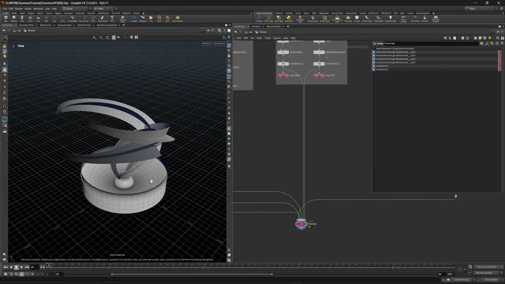

Summon VFX 1 — 8個のメッシュを作って FBX で出す
出典: Summon VFX | 1 | Build Effect Meshes （SideFX 公式チュートリアル Realtime Summon VFX の第1回 / 講師 Cesar Merchan さん / Houdini FX 21.0.631 / 8:37 / 英語）。 このページは、上記の動画を見ながら自分用にまとめた日本語の学習メモです。SideFX 公式の翻訳ではありません。 シリーズ全体の構成は第0回のメモにまとめています。
この回で扱うこと
- 召喚エフェクトに使う8個のメッシュを、どれも短いチェーンで作ること
uv2という2組目の UV セットを持たせる理由attribadjustcolorで頂点カラーにグラデーションを焼くこと。テクスチャを増やさずにフェードを作れますLabs Discのバージョンによる違いと、旧バージョンを Tab メニューに出す設定curveuを使って、カーブに沿った 0〜1 の値でグラデーションを作ること- 3つのメッシュを1つの FBX にまとめて、Unreal 側で別オブジェクトとして受け取る方法
やっていること自体は難しくありません。ただ「リアルタイムに渡すために何を仕込んでおくか」が どのメッシュにも共通して入っているので、そこを見ると学びが多い回だと思います。
1. どのメッシュにも共通する4つの工程
8個それぞれ作り方は違うのですが、最後の仕上げはほぼ同じ形をしています。
| 工程 | ノード | なぜ |
|---|---|---|
| 2組目の UV を持たせる | uvproject（UV Project）で UV Attribute を uv2 |
1つのメッシュに UV セットを2組持たせられます。Unreal 側で用途ごとに使い分けます |
| 頂点カラーを焼く | attribadjustcolor（Attribute Adjust Color） |
Pattern Type を Radial にすれば内→外、Line にすれば上→下のグラデーションになります |
| 100倍に拡大する | transform |
Unreal に持っていくための単位合わせです。Houdini の1単位が Unreal の1cm 相当になります |
| 書き出す | rop_fbx（ROP FBX Output） |
メッシュごとに1つずつ置いています |
100倍はうっかり忘れると後で全部やり直しになるところなので、 メッシュを作るたびに毎回入れておくのが安全です。
2. Labs Disc のバージョン違いを使い分ける
ポータル周りの円盤には Labs Disc を使いますが、この回では2つのバージョンを使い分けています。
| ノード | この回での役 |
|---|---|
labs::disc_generatorLabs Disc Generator（旧） |
内外の半径・辺の数・分割数を決めて、Add UVs をオンにして UV を持たせます |
labs::disc_generator::1.1Labs Disc（新） |
ポータル本体用。こちらには Vertex Color のタブがあり、Add Color をオンにするとカラーランプでグラデーションを直接作れます |
ここで一つ実用的な話が出てきます。新しいバージョンがあると、Tab メニューには新しいほうしか出ません。 旧バージョンを使いたいときは、アセット定義のツールバーで Show Menu When Needed のような設定をオンにすると選べるようになります。
「古いノードのほうが欲しい挙動をする」という状況は実際に起きるので、 出し方を知っておくと詰まりません。
3. 8個のメッシュ
| 用途 | 作り方 |
|---|---|
| ポータル近くのエネルギー | Labs Disc Generator（Add UVs）→ uv2 → Attribute Adjust Color（Radial） |
| ポータル本体 | Labs Disc 1.1 の Vertex Color（Add Color + ランプ） |
| ポータルが開いたときの光条 | Labs Cylinder。UVs をオンにすると UV は付きますがUV 空間を埋めきらないので、uvtransform で Y 方向に拡大します。Attribute Adjust Color は Line で上をフェード |
| エネルギーを集める段 | Labs Disc をカーブランプで制御 → matchsize の Justify Y = Min で位置を揃えます |
| 球状のもの | sphere → uvtexture（Texture Type: Polar）→ clip で半分に切る → Attribute Adjust Color で上下を塗り分け |
| ソーラークラスタ ×3 | 下の節で詳しく |
Polar UV は Fix Boundary Seams を忘れない
球に uvtexture で Polar の UV を張るとき、
Fix Boundary Seams をオンにしないと継ぎ目で妙な結果になります。
動画でも「オフだと変な感じになる」と実演しています。
オンにしても位置が少しずれるので、そこは uvtransform で合わせます。
4. ソーラークラスタ — Spiral と Sweep と curveu
ここがこの回でいちばん作り込んでいる部分です。
spiral（Spiral SOP）で螺旋のカーブを作ります。Height、Turns、 Increase per Turn（radiusincreaseperturn）、Radius Scale で形を決めますresampleで Segments を決め、同時に Create Curve U Point Attribute（docurveuattr）をオンにしますsweepで断面を付けます。Surface Shape = Ribbon、Columns と Width を調整し、 Apply Scale Along Curve で端と根元の太さを変えますsweepの UVs and Attributes タブで UV を計算し、 Normalize Computed UVs をオンにして UV 空間に収めます- Color 系のノードで
curveuを参照して、端と根元にグラデーションを付けます
curveu とは何か
動画でも「Curve U って何をしているか気になりませんか」と立ち止まって説明しています。
curveu はカーブに沿った 0 から 1 の値です。根元が 0、先端が 1 になります。
これがあると「先端だけ細く」「根元だけ濃く」といった指定が、 位置の計算をせずにランプ1つで書けます。カーブから作る形では毎回使える考え方だと思います。
パラメータのラベルは Curve U、作られるアトリビュートの名前は curveu です。
音声だと「Curve UV」と聞こえますが、UV とは別のものです。
参照コピーで3本に増やす
1本できたら Ctrl + Alt + Shift + 左クリックで
参照コピー（同じ値を参照するノード）を作れます。
コピーしたほうは Roll の参照だけを外して 90 度を入れます。
これで十字に交差した形になります。
同じことをもう2回やり、そのときは spiral の値を少しずつ変えて3本に変化を付けます。
「共通部分は参照で繋いだまま、変えたいところだけ参照を切る」という作り方です。 後から共通の形を直したいときに、参照している側は全部付いてきます。
5. 3つのメッシュを1つの FBX にまとめる
ソーラークラスタ3本は Unreal 側でも別オブジェクトとして扱いたいのですが、 FBX を3つに分けたくはありません。そこでこうします。
nameノードでsolarcluster1/2/3と名前を付けますrop_fbxで Build Hierarchy from Path Attribute をオンにします- Path Attribute に
nameと入れます
これで1つの FBX の中に3つのメッシュが階層として入ります。 Unreal に読み込むと3つのオブジェクトとして出てきます。 アトリビュートの値がそのまま書き出し先の階層になる、という分かりやすい仕組みです。
6. Merge で全部並べて確認する
最後に merge を1つ置いて、作ったメッシュを全部繋いでプレビューします。
スケールが揃っているか、位置関係がおかしくないかをここで見ます。

ネットワークを見ると、末端に rop_fbx がメッシュごとに1つずつ並んでいます。
確認用の merge は Preview という名前で、
配線を Network Dot 経由に通してまとめています。
書き出しの本線とは別に「見るための枝」を1本持っておく、という整理です。
この回のまとめ
- どのメッシュも
uv2→ 頂点カラー → 100倍 → FBX という同じ仕上げをします - 100倍のスケールは Unreal 用です。忘れると後で全部やり直しになります
Labs Discは新旧2バージョンあり、新しいほうにだけ Vertex Color があります。旧版は Tab メニューに出ないので、アセット定義側の設定で出しますLabs Cylinderの UV はUV 空間を埋めきらないのでuvtransformで拡大します- 球の Polar UV は Fix Boundary Seams をオンにしないと継ぎ目が崩れます
curveuはカーブに沿った 0〜1 の値です。先端だけ／根元だけの指定がランプ1つで書けますCtrl+Alt+Shift+クリックの参照コピーで、共通部分を繋いだまま一部だけ変えられますrop_fbxの Build Hierarchy from Path Attribute にnameを渡せば、1つの FBX に複数メッシュを階層で入れられます
次の第2回は Copernicus に移って、これらのメッシュに貼るテクスチャを作ります。 1枚の画像に3〜4種類の情報を詰めるパックテクスチャが中心で、 最後に煙を 8×8 のフリップブックとして書き出します。